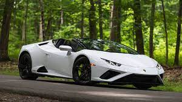
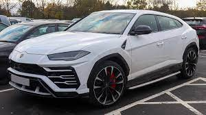

Automobili Lamborghini S.p.A. is an Italian brand and manufacturer of luxury sports cars and SUVs based in Sant'Agata Bolognese. The company is owned by the Volkswagen Group through its subsidiary Audi.
Founder: Ferruccio Lamborghini
Founded: May 1963, Sant'Agata Bolognese, Italy
CEO: Stephan Winkelmann (Dec 1, 2020)
Headquarters: Sant'Agata Bolognese, Italy
Parent organizations: Audi, Volkswagen Group
Lamborghini Aventador
The Aventador has been created to anticipate the future, as demonstrated by the use of innovative technology, including a V12 engine and the extensive use of carbon fiber.
The authentic design masterpieces together stark dynamism with aggression to produce a cutting edge carbon fiber monocoque. The interior of the Aventador combines high-level technology and luxury equipment with premium-quality materials, skilfully crafted with the expertise characteristic of the finest Italian traditions. A supercar family that has already become a legend in its own right. Discover technical specifications, dimensions, performance, and the detailed features of all the new Lamborghini Aventador models.

Lamborghini Huracán
From our past, we've learned perfection. This is how the first model of the Lamborghini Huracán was born. More performance, more control, more innovation. The Huracán is equipped with a powerful V10 engine and the latest technologies to perform at its absolute best. Engineered to guarantee the best performance and control under any driving condition, it's easy to take to the limit, not to mention extremely fun, thanks to technology like the Lamborghini Doppia Frizione (LDF) dual clutch gearbox and the electronically-controlled four-wheel drive. Enjoy the best driving experience, ever. Discover all the Lamborghini Huracán models.

Lamborghini Urus
Lamborghini Urus is the world's first Super Sport Utility Vehicle, in which luxury, sportiness and performance meet comfort and versatility. It offers best-in-class driving dynamics, alongside its unmistakable elegance of design. Urus embodies the characteristics of multiple souls: sporty, elegant and off-road, and has a suitability for everyday driving in a range of environments. With its surprisingly distinct engine sound, combined with high performance, Lamborghini Urus is anything but typical.
Lamborghini Miura
The car was the first supercar with a rear mid-engined two-seat layout, although the concept was first seen in a production road car with René Bonnet's Matra Djet, introduced in 1964. This layout has since become the standard for high-performance sports and supercars. When released, it was the fastest production road car.
The Miura was originally conceived by Lamborghini's engineering team, which designed the car in its spare time against the wishes[citation needed] of company founder Ferruccio Lamborghini, who preferred powerful yet sedate grand touring cars over the race car-derived machines produced by local rival Ferrari.
Lamborghini Veneno
The car was the first supercar with a rear mid-engined two-seat layout, although the concept was first seen in a production road car with René Bonnet's Matra Djet, introduced in 1964. This layout has since become the standard for high-performance sports and supercars. When released, it was the fastest production road car.
The Miura was originally conceived by Lamborghini's engineering team, which designed the car in its spare time against the wishes[citation needed] of company founder Ferruccio Lamborghini, who preferred powerful yet sedate grand touring cars over the race car-derived machines produced by local rival Ferrari.